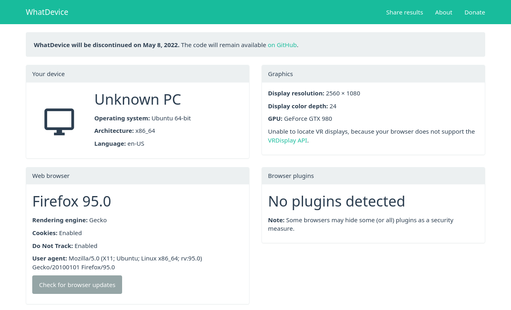

Back in 2017, I released WhatDevice, a web app for quickly checking information about your software and hardware configuration. It’s sort of like the hundreds of user agent checker websites that already exist, but with a cleaner design and more data presented (such as some sensor info, your GPU, and other information).

However, WhatDevice never caught on in the way I was hoping for, and it’s also becoming progressively less useful. Web browsers are starting to clamp down on methods for checking your hardware and software configuration, because they are often used for fingerprinting (a way to identify a user besides the IP address). So I think it’s time to say goodbye to WhatDevice.
My registration for the whatdevice.app domain expires after May 8, 2022, so I figure that’s a good time for me to shut it down. I’ll keep the source code available on GitHub, but the web app won’t actually be accessible (unless someone else decides to host it).